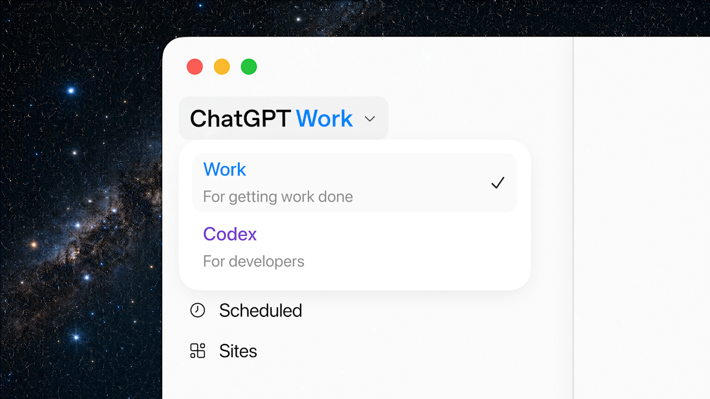
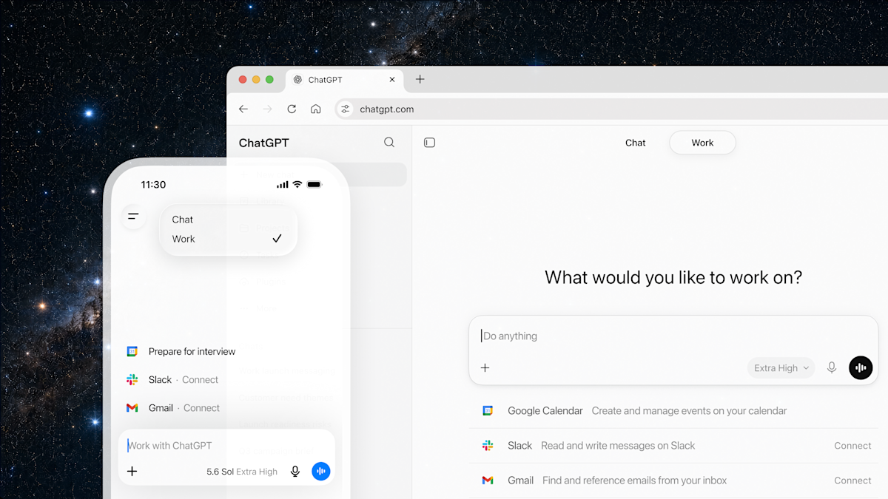
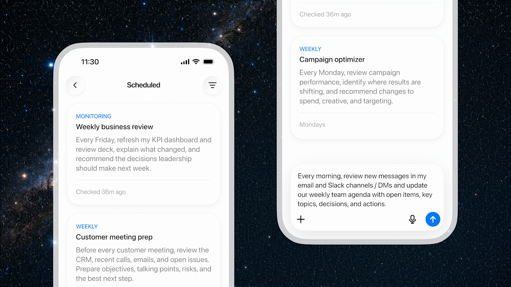

챗GPT 워크(ChatGPT Work)란 — 챗GPT·코덱스와 다른 점, 플랜별 이용 범위
OpenAI가 2026년 7월 9일 ChatGPT Work를 새로 선보였어요. ChatGPT Work는 새 에이전트 모드예요. 기존 채팅 모드 Chat, 개발자용 Codex와 나란히 놓였고요. 사람이 단계마다 지시하지 않아도 스스로 일을 이어간다는 뜻이에요. 이 모드는 GPT-5.6이 구동해요.
GPT-5.6의 세 성능 등급 Sol·Terra·Luna는 이전 글에서 짚었어요. 이 글은 ChatGPT Work 자체와 데스크톱 앱 변화, 플랜별 이용 범위에 집중해 볼게요.
ChatGPT·Codex와 갈리는 지점은 얼마나 폭넓은 작업을 얼마나 오래 스스로 맡기느냐예요.
ChatGPT Work가 정확히 뭔가요
ChatGPT Work는 한 번의 대화형 답변으로 끝나지 않아요. 여러 단계로 나뉜 프로젝트를 끝까지 진행해, 완성된 산출물을 내놓는 모드예요. 일반 Chat은 질문 하나에 답 하나를 주는 방식이에요. ChatGPT Work는 작업을 여러 단계로 쪼개고, 필요하면 몇 시간이고 계속 진행해요.
그 결과물도 답변 텍스트가 아니라 완성본이에요. 공식 안내 기준으로 문서·스프레드시트·프레젠테이션·보고서를 만들어 줘요. 간단한 웹사이트(Sites)까지 가능하고요.
Codex와는 역할이 갈려요. Codex는 코드 작성·디버깅 같은 개발 작업 전용 모드예요. ChatGPT Work는 개발 업무에 한정되지 않고, 사무·기획·분석처럼 더 폭넓은 업무를 맡아요.
연동 범위도 넓어요. 다만 출처에 따라 확인되는 목록이 조금 달라요.
- 공식 안내 기준 — 슬랙(Slack)·마이크로소프트 팀즈(Microsoft Teams)
- 공식 안내 기준 — 구글 캘린더·이메일(Gmail)
- 출시 보도 기준(TheNextWeb·Neowin 등) — 구글 드라이브(Google Drive)·셰어포인트(SharePoint)
- 출시 보도 기준 — CRM(고객관계관리 도구)·프로젝트 관리 도구
데스크톱 앱에서 Chat·Work·Codex가 어떻게 합쳐졌나요
새로 통합된 ChatGPT 데스크톱 앱은 Chat·Work·Codex를 하나의 창 안에 묶었어요. macOS·윈도우용으로 전 세계에 동시 배포됐어요.
기존 Codex 앱을 쓰던 사용자는 평소처럼 업데이트만 하면 이 통합 앱으로 넘어가요. 프로젝트·설정·작업 이력은 그대로 유지되고요.
고르는 방법은 이래요. 공식 도움말 기준으로 좌측 상단 메뉴에서 ChatGPT와 Codex를 골라요. ChatGPT를 골랐으면 상단 토글로 Chat과 Work를 바꿔요. Codex는 독립된 코딩 전용 화면으로 남아요. 대화 이력도 ChatGPT 쪽과 따로 쌓이고요.

메뉴를 열면 Work와 Codex가 이렇게 나뉘어 있어요. 아래로 Scheduled·Sites도 보이고요.
이미지 출처: OpenAI 공식 발표문 — ChatGPT Work · 네이버 본문엔 받아서 재업로드 권장
이름이 바뀐 건 통합 앱이 아니라, 예전부터 쓰던 챗 전용 데스크톱 앱이에요. OpenAI 공식 발표는 이렇게 밝혀요.
"The existing version of the ChatGPT desktop app will be renamed ChatGPT Classic." (OpenAI 공식 발표, 2026.07.09)
예전 챗 전용 앱이 ChatGPT Classic이라는 이름으로 남는다는 뜻이에요. 새 통합 앱으로 옮기고 싶지 않다면 그대로 써도 돼요. 공식 도움말은 ChatGPT Classic에서도 아래가 계속된다고 안내해요.
- 모델 업데이트
- 버그 수정
- 보안 패치
- 기존 Enterprise 기능 지원
다만 새로운 에이전트 기능은 새 앱에서만 제공될 수 있어요.
플랜별로 접근 범위가 어떻게 다른가요
웹·모바일 ChatGPT Work는 Pro·Enterprise·Edu 플랜부터 먼저 열렸어요. 2026년 7월 9일 발표 기준이에요. Plus·Business는 며칠에 걸쳐 순차로 확대됐고요. 데스크톱 앱에서 탭이 보이는 범위는 이와 또 달라요.
| 플랜 | 웹·모바일 ChatGPT Work | 데스크톱 앱 탭 노출 |
|---|---|---|
| Free / Go | 2026.07.09 발표 대상 아님 | 열림(사용량 제한 적용) |
| Plus | 며칠 내 순차 확대 | 열림 |
| Pro | 2026.07.09 즉시 오픈 | 열림 |
| Business | 며칠 내 순차 확대 | 열림 |
| Enterprise | 2026.07.09 즉시 오픈 | 열림 |
| Edu | 2026.07.09 즉시 오픈 | 열림 |
표: 플랜별 ChatGPT Work 웹·모바일 오픈 시점과 데스크톱 앱 탭 노출 범위 (OpenAI 공식 발표 기준, 2026.07.09 발표 당시 안내 · 추가 구독료는 전 플랜 없음 = 기존 구독에 포함 · 탭 노출은 접속 가능 여부일 뿐 실사용량 제한은 별개)
ChatGPT Work는 별도 신규 구독 등급이 아니에요. 기존 Plus·Pro·Business·Enterprise·Edu 플랜에 추가 요금 없이 포함돼요. 다만 Work 사용량은 Codex와 같은 풀에서 차감돼요. Business·Enterprise·Edu 플랜은 한도를 넘기면 크레딧을 추가로 사야 할 수 있고요.
데스크톱 앱은 Free 플랜을 포함한 모든 플랜에서 Chat·Work·Codex 탭 자체는 열려 있어요. 다만 탭이 보인다는 건 접속이 된다는 뜻이지, 웹·모바일 이용 범위와 같다는 뜻은 아니에요. 정확한 무료 사용량 수치는 공식적으로 공개돼 있지 않아요. 대신 무거운 작업일수록 사용량을 더 쓴다는 점은 공식 안내에 나와 있어요. 그래서 실제로 쓸 수 있는 양은 플랜마다 달라요.

웹은 상단 토글로, 모바일은 좌측 상단 메뉴로 Chat과 Work를 오가요.
이미지 출처: OpenAI 공식 발표문 — ChatGPT Work · 네이버 본문엔 받아서 재업로드 권장
예약작업으로 슬랙·팀즈 메시지를 자동 정리해 주나요
네. ChatGPT Work는 사용자가 자리를 비운 사이에도 작업을 계속 이어가요. 이 기능의 공식 명칭은 Scheduled Tasks, 예약작업이에요.
슬랙·팀즈에 새 메시지가 들어오면 그걸 감지해요. 그 내용을 최신 문서나 슬라이드로 정리해서 팀원들과 공유하고요. 한 번 설정해 두면 이 정리 작업이 계속 순환돼요.
복잡한 프로젝트도 이 방식으로 여러 단계에 걸쳐 몇 시간이고 이어서 진행할 수 있어요. 사람이 매번 다시 지시하지 않아도 되는 셈이에요.

작업마다 MONITORING·WEEKLY 같은 주기 라벨이 붙고, 마지막 확인 시각도 함께 보여요.
이미지 출처: OpenAI 공식 발표문 — ChatGPT Work · 네이버 본문엔 받아서 재업로드 권장
자주 묻는 질문
Q. 웹이나 모바일에서도 Codex를 쓸 수 있나요?
아니요. 공식 도움말 기준으로 Codex는 웹·모바일에서 고를 수 없어요. 대신 데스크톱에서 하던 Codex 대화는 ChatGPT 모바일 앱의 Remote 탭에서 이어 볼 수 있어요.
Q. 한국어로도 ChatGPT Work를 쓸 수 있나요?
공식 안내에 한국어 UI 지원 여부는 별도로 명시돼 있지 않아요. 다만 ChatGPT 인터페이스 자체는 한국어를 지원해요. 데스크톱 앱도 전 세계 동시 배포라 국내에서 바로 받아 볼 수 있고요.
참고한 곳
· OpenAI 공식 발표문 — ChatGPT Work
· OpenAI 공식 도움말 — 새 ChatGPT 데스크톱 앱으로 옮기기
✔ 같이 보면 좋아요
· GPT-5.6 Sol·Terra·Luna 차이 정리 — GPT-5.5랑 뭐가 다른가요
하루 정리
· ChatGPT Work는 Chat·Codex와 나란한 새 에이전트 모드, GPT-5.6이 구동해요
· 데스크톱 앱은 Chat·Work·Codex를 한 앱에 담고, 예전 챗 전용 앱은 ChatGPT Classic으로 남아요
· 플랜별 웹·모바일 오픈 시점은 다르지만 추가 구독료는 없어요
· 예약작업이 슬랙·팀즈 메시지를 자동으로 문서·슬라이드로 정리해 줘요
이미 데스크톱 앱을 쓰고 계신다면, 업데이트부터 해 보시면 돼요.